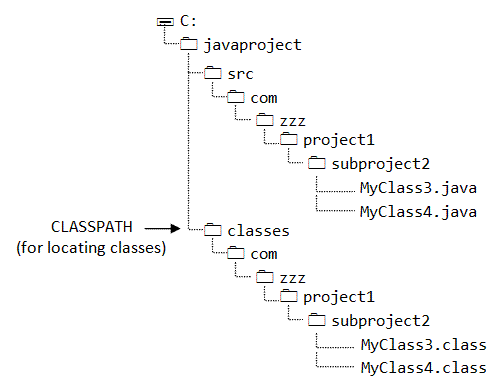

Java Programming
Package, Classpath
Package
A package is a collection of related Java entities (such as classes, interfaces, exceptions, errors and enums). Packages are used for:
- Resolving naming conflict of classes by prefixing the class name with a package name. For example,
com.zzz.Circleandcom.yyy.Circleare two distinct classes. Although they share the same class nameCircle, but they belong to two different packages:com.zzzandcom.yyy. These two classes can be used in the same program and distinguished using the fully-qualified class name - package name plus class name. This mechanism is called Namespace Management. - Access Control: Besides
publicandprivate, Java has two access control modifiers –protectedand default – that are related to package. A protected entity is accessible by classes in the same package and its subclasses. An entity without access control modifier (i.e., default) is accessible by classes in the same package only. - For distributing a collection of reusable classes, usually in a format known as Java Archive (JAR) file.
Package Naming Convention
A package name is made up of the reverse of the Internet Domain Name (to ensure uniqueness) plus your own organization's internal project name, separated by dots '.'. Package names are in lowercase. For example, suppose that your Internet Domain Name is "zzz.com", you can name your package as "com.zzz.project1.subproject2".
The prefix "java" and "javax" are reserved for core Java packages and Java extensions, respectively.
Package Name & the Directory Structure
The package name is closely associated with the directory structure used to store the classes. The classes (and other entities) belonging to a specific package are stored together in the same directory. Furthermore, they are stored in a sub-directory structure specified by its package name. For example, the class Circle of package com.zzz.project1.subproject2 is stored as "$BASE_DIR\com\zzz\project1\subproject2\Circle.class", where $BASE_DIR denotes the base directory of the package. Clearly, the "dot" in the package name corresponds to a sub-directory of the file system.
The base directory ($BASE_DIR) could be located anywhere in the file system. Hence, the Java compiler and runtime must be informed about the location of the $BASE_DIR so as to locate the classes. This is accomplished by an environment variable called CLASSPATH. CLASSPATH is similar to another environment variable PATH, which is used by the command shell to search for the executable programs.
In writing GUI programs, we are often confused by two packages: java.awt and java.awt.event. They are two distinct packages sharing some common directory structures. The classes belonging to the package java.awt are stored in directory "$BASE_DIR\java\awt\" while the classes of package java.awt.event are stored in directory "$BASE_DIR\java\awt\event\". java.awt and java.awt.event are two distinct packages with common prefix and directory structure. There is no such concept of sub-package in Java (i.e., java.awt.event is not a sub-package of java.awt).
Creating Packages
To make a class as part of a package, you have to include the package statement as the first statement in the source file.
Example 1
We shall write a class called Circle in package com.yyy. It is a good practice to store the source codes and the classes in separate directories, to facilitate the distribution of classes without the source codes. Suppose that we save the source as d:\myJavaProject\src\com\yyy\Circle.java, and the compiled class as d:\myJavaProject\classes\com\yyy\Circle.class. Let's write the source as follows:
// d:\myJavaProject\src\com\yyy\Circle.java
package com.yyy;
public class Circle {
private double radius;
public Circle(double radius) {
this.radius = radius;
}
public double getRadius() {
return radius;
}
public void setRadius(double radius) {
this.radius = radius;
}
}
To compile the source using JDK, we need to use the -d option to specify the package base directory of the compiled class d:\myJavaProject\classes as follows (-d defaulted to the current directory):
> javac -d d:\myJavaProject\classes d:\myJavaProject\src\com\yyy\Circle.java
The compiled class will be kept in d:\myJavaProject\classes\com\yyy\Circle.class. Directory "com.yyy" will be created automatically. Instead of absolute path, we could also use relative path.
Let's write a test program to use this Circle class. Suppose that TestCircle.java is saved in d:\myOtherProject.
// d:\myOtherProject\TestCircle.java
import com.yyy.Circle;
public class TestCircle {
public static void main(String[] args) {
Circle c = new Circle(1.23);
System.out.println(c.getRadius());
}
}
If we compile TestCircle.java from the directory d:\myOtherProject,
we will get a error message, as the compiler cannot find the com.yyy.Circle class.
d:> cd \myOtherProject
d:\myOtherProject> javac TestCircle.java
TestCircle.java:1: package com.yyy does not exist
import com.yyy.Circle;
^
We need to use the -cp (or -classpath) option to specify the base directory of the package com.yyy, in order to locate com.yyy.Circle.
d:\myOtherProject> javac -cp d:\myJavaProject\classes TestCircle.java
To run the TestCircle, we again get a error, as JRE cannot find the com.yyy.Circle.
d:\myOtherProject> java TestCircle Exception in thread "main" java.lang.NoClassDefFoundError: com/yyy/Circle
Let include the base directory of the package com.yyy in the classpath (to locate com.yyy.Circle):
d:\myOtherProject> java -cp d:\myJavaProject\classes TestCircle Exception in thread "main" java.lang.NoClassDefFoundError: TestCircle
But now, the JRE can't even find the TestCircle class, which is located in the current directory. This is because if CLASSPATH is not explicitly set, it defaulted to the current directory. However, if CLASSPATH is explicitly set, it does not include the current directory unless the current directory is included. Hence, we need to include current directory (denoted as '.') in the CLASSPATH, together with the base directory of package com.yyy, separated by ';', as follows:
d:\myOtherProject> java -cp .;d:\myJavaProject\classes TestCircle 1.23
Example 2
Suppose that the TestCircle class in Example 1 in defined in a package com.abc, and save as d:\myOtherProject\src\com\abc\TestCircle.java.
// d:\myOtherProject\src\com.abc\TestCircle.java
package com.abc;
import com.yyy.Circle;
public class TestCircle {
......
}
Suppose the compiled class is to be kept as d:\myOtherProject\classes\com\abc\TestCircle.class.
-- To compile TestCircle.java, set the current directory and use relative paths for TestCircle. d:> cd \myOtherProject d:\myOtherProject> javac -d classes -cp d:\myJavaProject\classes src\com\abc\TestCircle.java -- To run TestCircle, need to include the base directory of TestCircle and Circle in classpath. -- Also need to use the fully-qualified name (package name plus class name) for TestCircle d:\myOtherProject> java -cp classes;d:\myJavaProject\classes com.abc.TestCircle
Another Example
In this example, we have more than one classes in the package and the classes reference each others. For example, the package com.zzz.project1.subproject2 has two classes: MyClass3 and MyClass4, defined as follows:
package com.zzz.project1.subproject2;
public class MyClass3 {
private MyClass4 myClass4;
public MyClass3 () { // constructor
System.out.println("MyClass3 constructed");
myClass4 = new MyClass4(); // use MyClass4 in the same package
}
// main() included here for testing
public static void main(String[] args) {
new MyClass3();
}
}
package com.zzz.project1.subproject2;
public class MyClass4 { // constructor
public MyClass4() {
System.out.println("MyClass4 constructed");
}
}
Case 1: Source and class files in the same directory
Suppose that we keep the source and class files in the same directory, says, $BASE_DIR\com\zzz\project1\subproject2. Note that you have to adhere to the sub-directory structure specified in the package name for keeping the classes. I assume that the CLASSPATH includes the current working directory.
To compile all the source files:
> cd $BASE_DIR > javac com\zzz\project1\subproject2\*.java
The resultant class files will be placed in the same directory as the source files.
To execute the MyClass3, you need to issue the fully-qualified class name:
> cd $BASE_DIR > java com.zzz.project1.subproject2.MyClass3
NOTES:
- To compile the program, you specify the directory path using directory separator
'\'. - To execute the class, you specify the fully-qualified class name using the dot
'.'.
Alternatively, you can launch the class from any directory, provided that the $BASE_DIR is included in the CLASSPATH environment variable. You can also use command-line option -classpath or -cp to specify CLASSPATH used for this command:
> java –cp $BASE_DIR com.zzz.project1.subproject2.MyClass3
Case 2: Source and class files in separate directories
Suppose that you decided to keep the source files and classes in separate directories (for distribution of classes without the sources), and the directory structure of your source files and classes is as follows:
To compile the source files and place the classes in the desired directory, you can use the "-d" (for destination) command-line option of the Java compiler, which specifies the location of the compiled classes. You also need to specify the CLASSPATH of the classes, as MyClass3 uses MyClass4, as follows:
> cd $SRC_BASE_DIR\zzz\project1\subproject2
> javac –d $CLASS_BASE_DIR -classpath .;$CLASS_BASE_DIR *.java
// try omitting the classpath and compile just MyClass3 which uses MyClass4
> javac –d $CLASS_BASE_DIR MyClass3.java
The sub-directory structure corresponding to the package name for the classes will be created automatically if it does not already exist. In summary, during the compilation, you need to set both -d (for destination of the classes), and -classpath (if one class references other classes in the package).
In the above example, the source directory $SRC_BASE_DIR is "c:\javaproject\src" and the classes' base directory $CLASS_BASE_DIR is "c:\javaproject\classes"
To execute the MyClass3:
> cd $CLASS_BASE_DIR > java com.zzz.project1.subproject2.MyClass3
Using IDE
Managing packages and CLASSPATH yourself with obly JDK is troublesome. IDE such as Eclipses and NetBeans could manage the packages and CLASSPATH for you!!
The Default Package
Every Java class must belong to a package. You can explicitly name the package by providing a package statement in the beginning of the source file. If the package statement is omitted, the class belongs to the so-called default package, with no sub-directory structure. Use of default package is not recommended other than writing toy program and for quick testing.
CLASSPATH - For Locating Classes
CLASSPATH is an environment variable (i.e., global variables of the operating system available to all the processes) needed for the Java compiler and runtime to locate the Java packages used in a Java program. (Why not call PACKAGEPATH?) This is similar to another environment variable PATH, which is used by the CMD shell to find the executable programs.
CLASSPATH can be set in one of the following ways:
CLASSPATHcan be set permanently in the environment: In Windows, choose control panel ⇒ System ⇒ Advanced ⇒ Environment Variables ⇒ choose "System Variables" (for all the users) or "User Variables" (only the currently login user) ⇒ choose "Edit" (ifCLASSPATHalready exists) or "New" ⇒ Enter "CLASSPATH" as the variable name ⇒ Enter the required directories and JAR files (separated by semicolons) as the value (e.g., ".;c:\javaproject\classes;d:\tomcat\lib\servlet-api.jar"). Take note that you need to include the current working directory (denoted by'.') in theCLASSPATH.To check the current setting of the
CLASSPATH, issue the following command:> SET CLASSPATH
CLASSPATHcan be set temporarily for that particular CMD shell session by issuing the following command:> SET CLASSPATH=.;c:\javaproject\classes;d:\tomcat\lib\servlet-api.jar
- Instead of using the
CLASSPATHenvironment variable, you can also use the command-line option-classpathor-cpof thejavacandjavacommands, for example,> java –classpath c:\javaproject\classes com.abc.project1.subproject2.MyClass3
How Classes are Found?
(Read "How classes are found" at the JDK documentation's main page.)The Java Virtual Machine (JVM) searches for and loads classes in this order:
- Bootstrap Classes: include
rt.jar(runtime), and other classes specified in thesun.boot.class.pathsystem property, which could includei18n.jar(internationalization),sunrsasign.jar,jsse.jar,jce.jar,charsets.jar, andjre/classes. - Extension Classes via Java Extension mechanism: classes bundled as JAR file and kept in the "
$JAVA_HOME/jre/lib/ext" directory. - User Classes: located via
–classpathor–cpcommand-line option or CLASSPATH environment variable.
Normal users need not concern about bootstrap and extension classes. User classes are found though the so-called user class path - a list of directories and JAR files which contain class files. The directories and JAR files in the user class path are separated with a semi-colon ';' for Windows systems, or colon ':' for UNIX systems. The user class path is kept in the System Property java.class.path. The value is obtained from:
- The default value
'.'or current working directory. - The value of the
CLASSPATHenvironment variable, which overrides the default value. - The value of
–classpathor-cpcommand-line option, which overrides both the default value and the CLASSPATH value. - The JAR files in the
-jarcommand line option, which overrides all other values.
[How about java.lang, and classes in the same package? What is the order?]
REFERENCES & RESOURCES
- TODO
Latest version tested: JDK 1.6
Last modified: July 2008